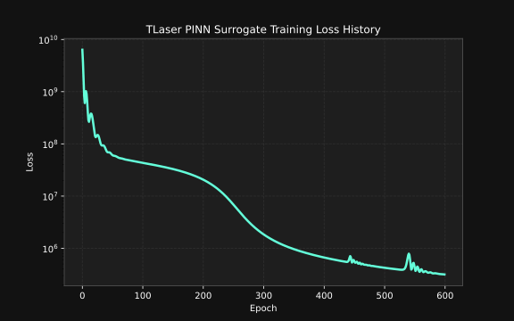
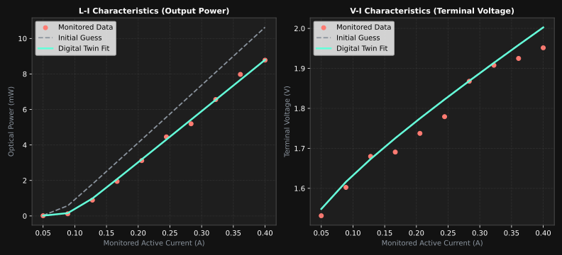

TLaser
结合 7D 物理信息神经网络（PINN）代理模型与动态参数在线优化拟合的通信级半导体激光器数字孪生系统。
数字孪生系统架构
将激光器芯片的物理测试特征实时映射并标定至高精度物理代理模型。
 a. 三维激光器芯片装配图
a. 三维激光器芯片装配图
脊波导半导体激光器二极管芯片的实体装配图结构。
 b. 横向二维切面 (x-y)
b. 横向二维切面 (x-y)
参数化脊宽 (w) 和有源层厚度 (d) 的横截面，由高精度求解器提供基础物理特征。
 c. 纵向谐振腔切面 (z)
c. 纵向谐振腔切面 (z)
沿有源多量子阱 (MQW) 纵向 z 轴方向的光波传播与载流子空间消耗网格。
7D 实时神经网络代理模型
TLaser 采用 7D 物理信息神经网络代理模型取代传统的慢速数值网格积分方法。通过将物理几何结构参数化，数字孪生系统无需重建网格即可在毫秒级时间内做出准确预测。
该代理模型输入为 7 维设计向量： $$\mathbf{X} = [R_1, R_2, L, T_0, I_{\text{active}}, w_{\text{active}}, d_{\text{active}}]$$ 输出为 105 维标量与数组，包含输出光功率 ($P_{\text{opt}}$)、电光转换效率 ($WPE$)、总输入电流 ($I_{\text{total}}$) 以及 51 个纵向位置点的载流子浓度 $N(z)$ 和光功率 $P(z)$ 空间分布曲线。

7D 代理模型训练收敛曲线图。载流子与光子传播物理惩罚函数
为了使深度学习模型的预测符合物理真实规律，TLaser 在训练的损失反向传播通路中直接嵌入了物理微分控制方程。这使得模型在阈值点附近和强热效应下也能保持极高的物理保真度。
- 载流子连续性方程约束： 惩罚载流子产生、复合与受激辐射三者在稳态下的偏离： $$G_{\text{inj}} - R_{\text{rec}}(N(z)) - R_{\text{stim}}(N(z), P_{\text{tot}}(z)) = 0$$
- 光子传播微分方程约束： 约束光强沿谐振腔纵向传播的二阶波动微分特性： $$\frac{d^2P}{dz^2} - (\Gamma g(z) - \alpha_i)^2 P(z) = 0$$
在线拟合与参数标定优化环路
由于器件老化、工艺偏差和工作环境剧烈变化，激光器内部物理常数会随时间漂移。TLaser 通过在线读取外置 LIV (光强-电流-电压) 传感器测试曲线，反向求解器件的真实物理属性。
标定优化程序采用 L-BFGS-B 极小化算法迭代更新以下 5 个关键物性参数： $$\boldsymbol{\theta} = [\alpha_i, \Gamma, C_{\text{multiplier}}, R_{\text{series}}, R_{\text{shunt}}]$$
- 内损耗 $\alpha_i$ 与局域限制因子 $\Gamma$： 修正激光器起振阈值与电光效率斜率。
- 俄歇复合乘数 $C$： 标定器件在大电流下的非辐射热骤降特性。
- 串联电阻 $R_s$ 与并联漏电电阻 $R_{\text{sh}}$： 极高精度拟合器件在电路层面的总电压和寄生电流特性。

标定程序拟合 LIV 测试数据前后的效果对比。科学建模与基本物理
引入参数化动态几何输入的 PINN 神经网络模型。
TLaser 将 Lasers 研究核心的高保真度半导体物理规律集成至实时数字孪生体中。在数据集生成与标定求解中，有源层横截面积 $A_{\text{act}} = w_{\text{active}} \times d_{\text{active}}$ 随脊波导几何变化而自适应缩放，进而动态影响局域载流子注入率与受激辐射跃迁。
这使得孪生体能实时、无网格重新编译地评估包含空间烧孔效应在内的半导体内部多物理特征。
求解速度与性能
毫秒级超低延迟，支撑数字孪生参数实时在线校准。
| 求解模式 | 单步耗时 | R² 相关度精度 |
|---|---|---|
| Elmer 二维有限元 FEM 求解器 | 12 - 25 秒 | 1.000 (标准参考源) |
| Quasi-3D 谐振腔打靶法数值求解 | 1.2 - 2.8 秒 | 1.000 (标准参考源) |
| TLaser PINN 物理信息代理模型 | < 5 毫秒 | > 0.997 |
安装与本地运行指南
在本地快速启动并配置 TLaser 数字孪生环境。
1. 克隆代码与依赖环境配置
git clone https://github.com/ZhenwenWan/TLaser.git cd TLaser python -m venv .venv .\.venv\Scripts\Activate.ps1 pip install -r requirements.txt
2. 启动 Streamlit 本地交互面板
python -m streamlit run app.py
在弹出的浏览器面板中实时调节滑块进行参数分析，或上传实时曲线执行在线物性常数拟合。